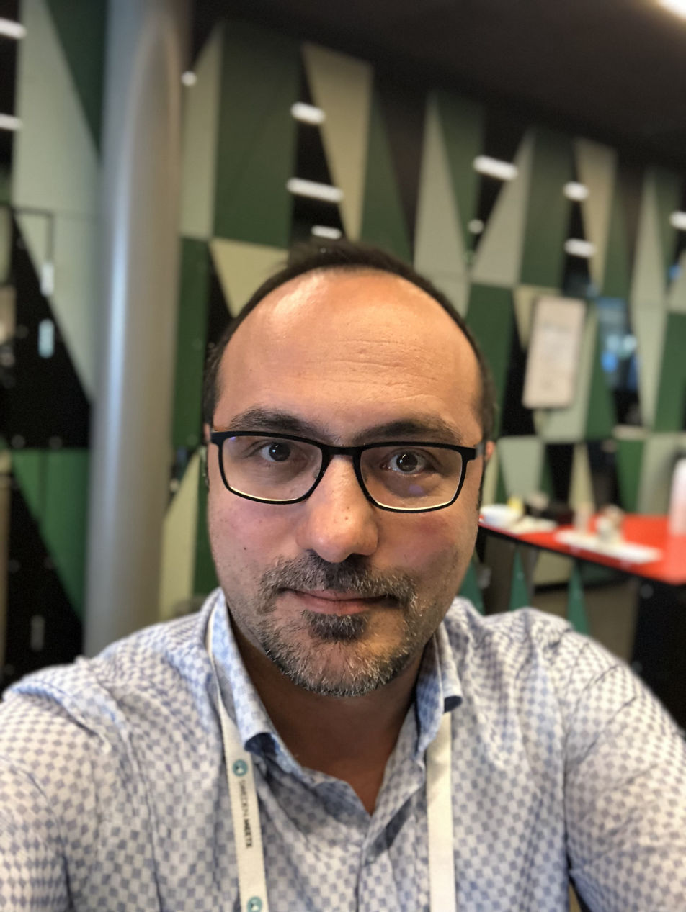
Please take your time to look around. I have over 170 publications listed on ORCID (as of November 2026), and I have supervised award-winning student projects. Citation metrics: h-index 27, 2,572 citations, i10-index 66 (Google Scholar, November 2026). I also served as an agile transformation consultant at Huawei Technologies (2018-2019), helping their software quality and operations team formulate agile approaches and architect software improvement activities.
Murat Yılmaz is a software architect and engineer with extensive industry experience in IT development and over a decade in research. In July 2026 he founded Sanalus.ai, a platform in development that aims to measure independent and AI-assisted software engineering competence with evidence. He holds a PhD in Software Engineering from Dublin City University (2013) and a Master's degree in Software Engineering from the University of Minnesota (2009). His Associate Professor title was awarded by the Interuniversity Board (ÜAK) in Computer Science and Engineering on 29 April 2019. Dr. Yılmaz served as Associate Professor in the Computer Engineering Department at Gazi University (2021-2026), where he also held administrative roles as Deputy Director of the Graduate School of Informatics (November 2022 to February 2024) and Head of the Department of Game Technologies, Graduate School of Informatics (from May 2023). He served as Academic Editor of IET Software (2017 to 2024) and Associate Editor of the Journal of Information Technologies (Bilişim Teknolojileri Dergisi), Gazi University (November 2022 to May 2024). Previously, he was Assistant Professor of Software Engineering at Dublin City University (2019-2021), Agile Consultant at Huawei Technologies (2018-2019), where he helped their software quality and operations team with agile transformation, and Faculty Member at Çankaya University (2013-2019). His research interests include generative AI and large language models in software engineering, context engineering and AI agents, empirical software engineering and multivocal literature reviews, DevOps and MLOps, the Metaverse and digital governance, virtual reality, human factors and ethics in AI-based systems, and gamification and serious games. He has over 170 publications listed on ORCID (as of November 2026).
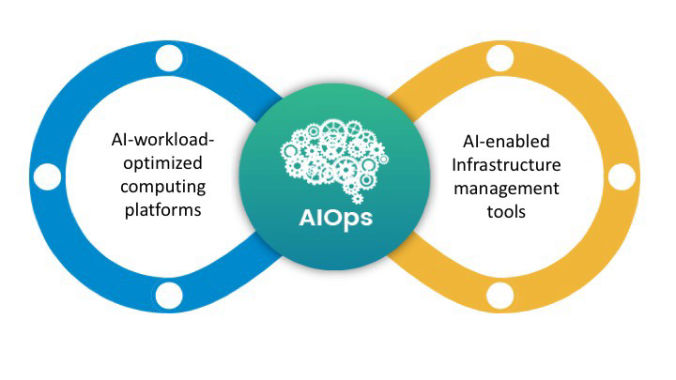
A platform in development that aims to measure independent and AI-assisted software engineering competence through coding tasks, debugging, tests and technical reasoning, scored against rubrics under human oversight. A closed technical beta and company pilots are planned. Founded in July 2026.
Funded by Ireland's Disruptive Technologies Innovation Fund (DTIF), September 2019 to March 2021. Dublin City University project focused on AI-assisted extraction of microservices from monolithic systems. Dr. Yılmaz served in a project lead and management role.
Creating a multi-layered framework that automates and enhances Software Development by using machine learning to analyze data collected from various operations tools and devices to automatically spot and react to issues in real-time.
The goal of the project is to create a new level of human computer interaction (HCI) by designing a dynamic story generation engine. Learn more...
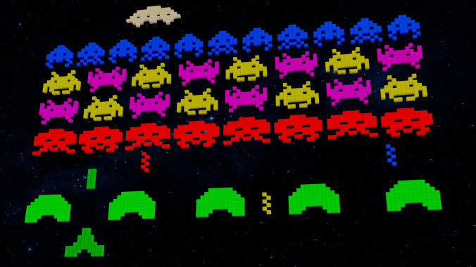
Gaming as a Service is a great facilitation for creating interactive gaming services which can handle millions of players. The service is a chance to create virtual communities based on trust and friendship among participants. Learn more...
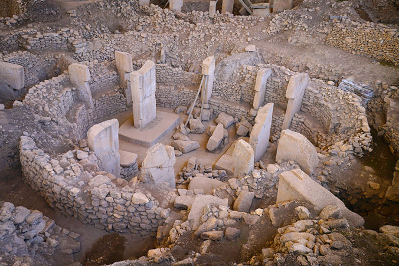
Göbekli Tepe is the oldest known temple in the world which attracts many tourists. This project builds an application of Virtual Reality based on virtual sotry telling that provides an opportunity for individuals fast, easy and fun access to cultural information.
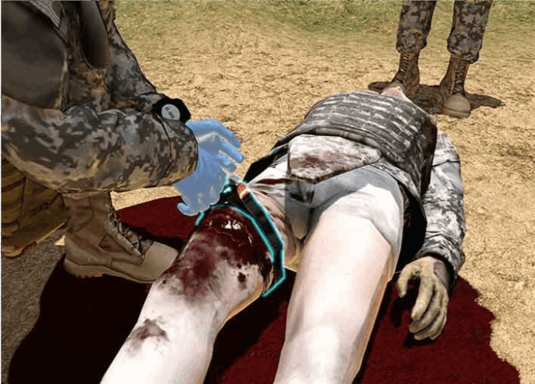
Simulacrum: Simulated Virtual Reality for Emergency Medical Intervention in Battle Field
Condition aims to educate military personnel about principles of medical interventions in battlefield conditions.
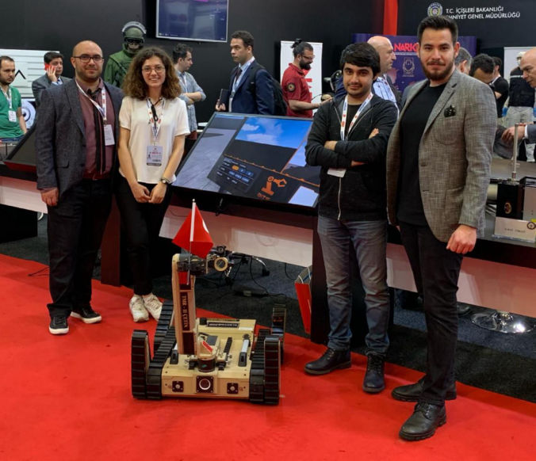
This project aims to train bomb disposal trainee using a serious game approach in a virtual reality-based training environment based-on a set of bomb disposal scenarios.
TÜBİTAK 2209-B industry-oriented undergraduate research project (2022/2). Metaverse Ortamında Sanal İnsanlar için Yeni Nesil Turing Testi. Supervised by Dr. Yılmaz.
TÜBİTAK 2209-B industry-oriented undergraduate research project (2023/2). Sihirli Ayna: ChatGPT Entegreli Sohbet Oyunu. Supervised by Dr. Yılmaz.
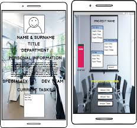
By creating a combination of augmented reality (AR) with software development workflow process, the goal of this project is to provide continuous onboarding to software practitioners while performing their daily tasks.
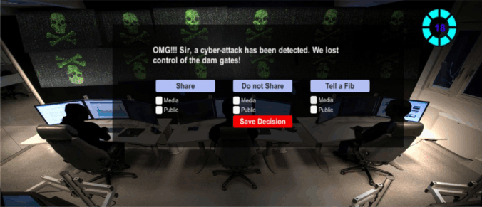
In this project, we design serious game for improving decision-making skills of military personnel on strategical level to support theoretical counter-terrorism courses as a virtual policymaking laboratory.
This project has started as a protoype for NATO Centre of Excellence Defence Against Terrorism (COE-DAT) trainees on counter terrorism.
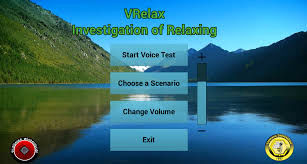
Project aims to develop VR Application that propose multiple relaxation scenarios to help consultants comfort themselves easily with experiencing their favorite sights and by recognizing their voice; analyze their stress amount and make inferences from it!
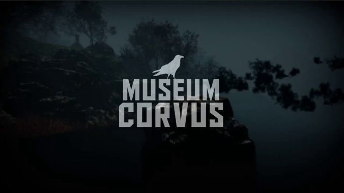
This project aims to assist people that are curious about the Turkish horror culture by helping them learning our culture with the advantages of virtual reality.
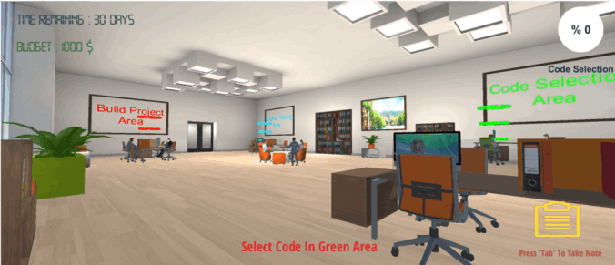
This training project is particularly addressed to novice software practitioners code review skills during the software development processes.
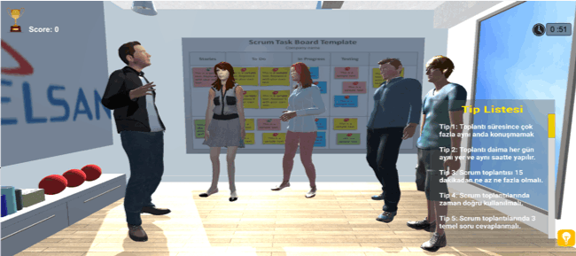
The goal of this project is to virtualize daily scrum meetings based on real world scenarios and various personality types of software practitioners where an environment is designed with some VR characters with personalities
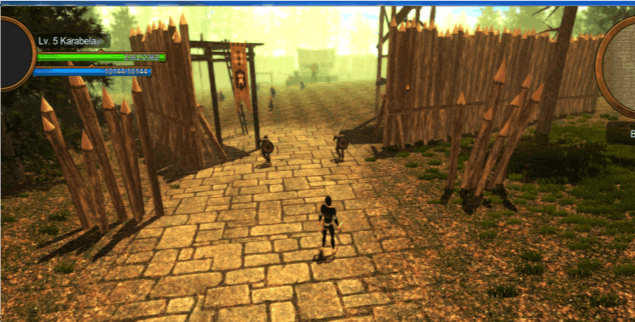
This project aims to develop a video game designed to recreate the story for conquest of Istanbul in a fantastic and strictly tailored way in the context of role playing adventure game fashion. The content is based on the historical evens during the conquest of Istanbul. The players play the role of a hero who serves the Ottoman Empire and Mehmed the Conqueror The map is a fantastical simulation of Belgrad County
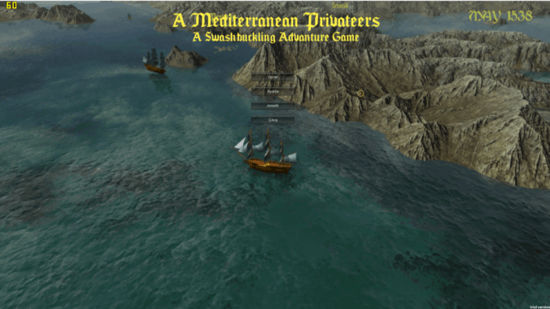
This project aims to inform the students about the historical events of Turkish navy owing to an adventurous game through
exploration and puzzle solving. The game is based on exploring and
questing for artifacts at Aegean Sea through Mediterranean coasts. The participants are able to own a ship and sail in a simulation environment where they can interact with non-
playable characters (NPC).
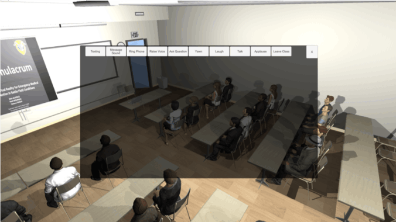
Software engineers may experience elevated levels of public speaking anxiety during their daily activities. The aim of the present study was to investigate the efficacy of virtual reality exposure for novice software engineers suffering frompublic speaking anxiety. The findings revealed that virtual reality exposure is effective to reduce the anxiety in public speaking.
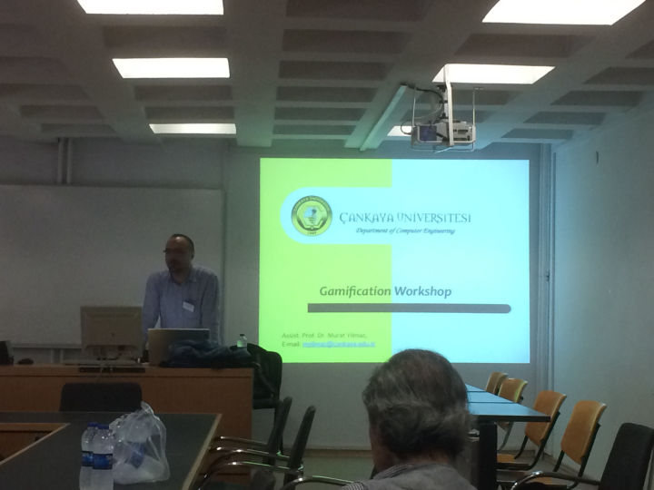
Ankara
Turkey
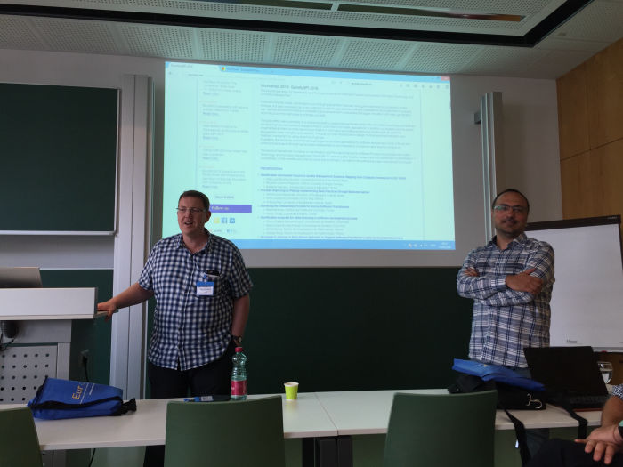
Graz,
Austria,
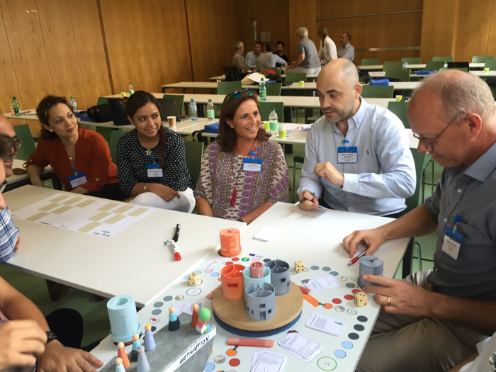
Ostrava,
Czech Republic,
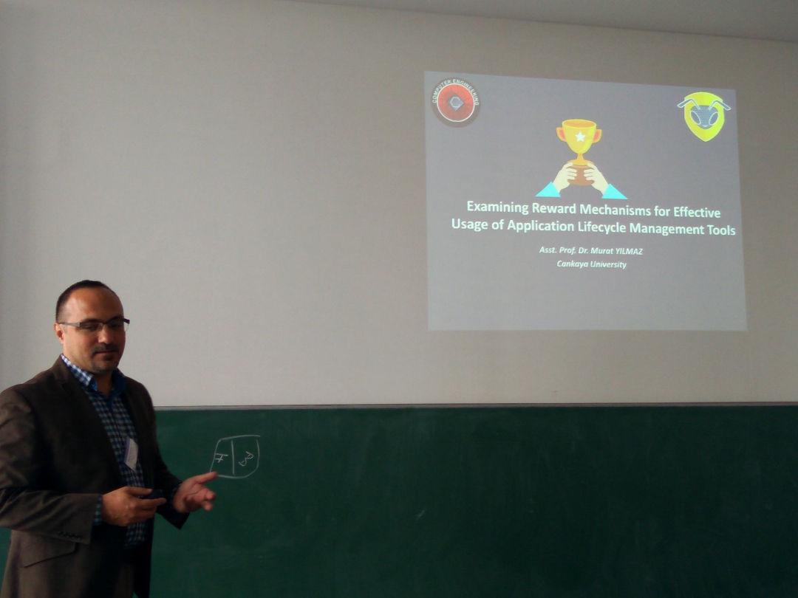
Bilbao
Spain
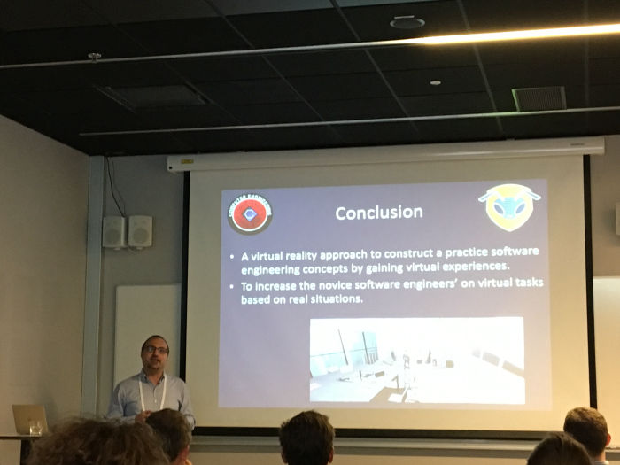
Edinburgh
Scotland
Not yet
Conducted
Organized a set of local gatherings and workshops to eastablish a community of interest on Virtual Reality and Serious Games. Please click learn more below to see our activities in pictures.
Ankara, Türkiye
Founder, Sanalus.ai
LinkedIn | GitHub | ORCID | Google Scholar
Follow me on social media
Built with Mobirise - Get now
FOLLOW ME @